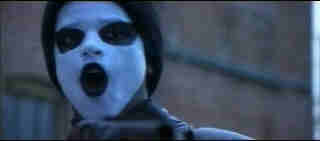

| Dead
Presidents/B+,B+ |
|
Hollywood/1995/119m/WS 2.35 |
Dead Presidents is a
hugely ambitious project. The movie attempts to define the Black experience in Vietnam. Though the
period of years covered by the narrative is small by epic standards, the sweep of storytelling
style creates a big feeling about each segment of Dead Presidents. Basically, the structure
follows a group of young men through the defining late teenage years, to participation in the
Vietnam War, to return home as veterans facing the difficult decisions of getting on with life.
The first segment of the film that defines its characters is most
light-hearted and is the least powerful part of Dead Presidents. The Vietnam segment which
follows is filmed is a very different style with dramatic lighting and an everlasting intensity.
It's a mesmerizing portrayal of the grunt's life in the field. When characters turn to the nether
side it is easy to accept. When Anthony returns home from this experience we are very relieved for
him. What's awaiting him in America is the next segment of Dead Presidents. How he deals
with his life leads to the final explosion of Dead Presidents, and cinematically, its
greatest achievement, the magnificent armored car heist.
 |
|
The heist sequence touches on brilliance.
©Hollywood |
One of the great successes of Dead
Presidents is how well it creates a sympathetic main character in Anthony Curtis. Curtis is the
good black kid getting through ghetto life with as much dignity as circumstances allow. The Hughes
Brothers, Albert and Allan, directing for the second time after their brilliant virgin outing of Menace
II Society, choose to spread an appealing sampling of Anthony's life before it audience before
getting into the more defining moments of Dead Presidents. We learn about Anthony in jive
talk with his friends, we get an inkling of his family life and we see him in action helping local
big shot Kirby, at his headquarters in the pool hall and later on his professional rounds. Anthony
Curtis is a character that we can care about.
Larenz Tate plays Anthony Curtis with a hunger for life. Tate is extremely
skilled at subtly conveying the changes in Curtis's life without altering the basic nature of this
young man. They work wonderfully well with their actors, giving them a chance to dig deep to find
the right emotions to define character. Keith David is proving himself one of the most versatile,
talented, and explosive actors working support in a variety of projects. David plays Dead
Presidents' Kirby, the alternate father figure for Anthony. David makes Kirby a more complex
man than we have any right to expect. Anthony learns a great deal from Kirby and Kirby is a man who
has made the most of what has been left for him in life. Other supporting players are uniformly
fine, capturing shorthand truths about their characters.
Technically, Dead Presidents is a delight on all counts. Working
once again with cinematographer Lisa Rinzler, Dead Presidents is a magnificently
photographed film. Rinzler uses anything and everything available on a set to get the desired
effect and the result is another imaginative and dynamic collaboration with the Hughes Brothers
after their brilliant Menace II Society. Rinzler even uses some jury rigged fluorescent
lights to get her desired effect in a car scene. The editing, particularly of the heist sequence,
is as crisp and rapid as the dancing notes of a musical scherzo. Production Design by Dan Brisbin
captures the feeling of each place and time perfectly. The icing on the cake is a hypnotic score by
Danny Elfman which captures and enhances the world of Dead Presidents that the Hughes
Brothers have so cannily crafted.
A beautiful transfer preserves the delicate changes of color palette used
by the directors and DP Lisa Rinzler. The excellent contrast ratio of this disc allows perfect
preservation of the imaginative lighting of Dead Presidents. The sound is simply splendid.
Elfman's score sounds authoritative with tight bass response. Surround information is exciting,
fully directional, and compliments the video for maximum effect.
|
|

Selections from the feature archive include articles on Akira
Kurosawa, Frank Darabont,
Blonde
Bimbos, Hollywood Street Gangs,
or Vietnam:
The Hollywood Pariah, and many more....
Vietnam:
The Hollywood Pariah

During World War II, Hollywood pumped out war movies one after the other. Vietnam was was another
story. As far as Hollywood was concerned it was a pariah.
Epic Images of Kurosawa

Click on the image above for an original view of Akira Kurosawa's work
Puttin on the
Ritz

Fred Astaire and Cyd Charisse bring Silk Stockings to life, a remake of Ninotchka, one of many
films successfully turned into musicals by the Hollywood dream factory. Read all about remakes into
musicals by clicking on the divine dancers.
 
DVDPlanet is the DVD
incarnation of legendary laser retailer Ken Crane's. Deep discounts and serious service.
 Direct from the corridors of the Home Theater Forum, Home Theater Talk is the
newest place on the Net to discuss everything home theater. Friendly atmosphere and knowledgeable
folks are the secret ingredients. Direct from the corridors of the Home Theater Forum, Home Theater Talk is the
newest place on the Net to discuss everything home theater. Friendly atmosphere and knowledgeable
folks are the secret ingredients.
 . .
The
Movie Poster Archive includes extensive poster images from the films of stars like Susan Hayward,
Kirk Douglas, Katharine Hepburn and many more. Our featured star is John Wayne
|